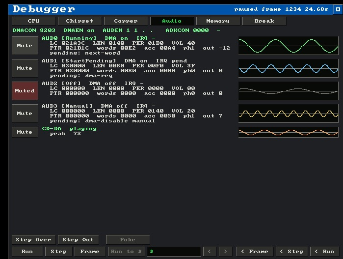

Copperline 0.10.0: the 68060, the MMUs and a much bigger debugger
0.10.0 is the largest Copperline release so far. The headline is CPU work - a 68060 model joins the family, and the 68030 and 68040 get real MMU and cache behaviour - and around it: a debugger that gained a command console and three new tabs, the A4091 Zorro III SCSI board, host MIDI and TCP bridges for Paula's serial port, selectable audio output, zipped floppy images, and another broad pass over CPU, Copper, Agnus, Denise, Paula, CIA, blitter, floppy and display timing.
(A confession: this write-up is five days late, and 0.11.0 shipped in the meantime. Consider this the missing chapter.)
As always, this is a hardware-behaviour release: when something doesn't run, the fix models the underlying Amiga subsystem more faithfully rather than special-casing the title.
The 68060
Copperline now goes all the way up the 68k line. The 68060 profile models
superscalar dual-issue pairing, the branch cache, LPSTOP, the
060's reduced FPU surface with unimplemented-instruction traps, 060
exception frames and its MMU specifics - selectable from the launcher and
the config file like every other CPU.
...and real MMUs below it
The 68030 and 68040 gained the paged MMU: translation, the transparent translation registers, the ATC, access-error frames, write-protect and permission faults, and MOVE16 alignment behaviour, plus the 68040's instruction and data caches - all backed by expanded CPU fixture tests.
One default changed alongside this: CPUs with on-chip caches now enable
them out of the box, which is how shipped 68020+ machines actually ran.
If you need the old cache-off behaviour for a local setup, set
[cpu] icache = false and/or dcache = false.
The debugger: a console and three new tabs
The in-window debugger got its biggest single upgrade since it appeared.
Cmd+K opens a GDB-flavoured command console in its
own tool window: inspect and mutate memory and registers, HUNT
for byte patterns, TRACE START / STOP, set
catchpoints, walk a heuristic call stack, list the tasks and segments of a
running AmigaOS, and hand the reverse runner explicit targets. It takes
clipboard paste, and a multi-line paste executes line by line - so a saved
command script replays with one paste.
Three new tabs joined CPU, Chipset, Copper, Memory and Break:
- Video shows the display pipeline visually, with layer isolation: hide individual bitplanes and sprites in the presented picture to answer "which layer is drawing that" by elimination. It is an output-only filter - collisions and priority still use the true data, so it can never perturb the emulation.
- Audio decodes Paula's four channels: the DMA state machine each channel is in, its latches, pointer and live output, with a mute button and an oscilloscope per channel - and a fifth row for CD-DA on CDTV / CD32.
- IO Map is a browsable map of the whole custom bank, every register with its live value and the selected one's bits decoded by name.

The Copper tab picked up breakpoints and single-stepping - stop when the Copper's PC arrives at an address, or retire one Copper instruction at a time - watchpoints report more about the write that fired them, and the frame analyzer's beam scrubbing got smoother.
A4091 SCSI
Bernie Innocenti (@codewiz)
contributed an A4091, the Zorro III SCSI board: nibble-wide autoboot ROM
exposure, the DMA and SCSI FIFOs, the NCR SCRIPTS processor's register and
memory moves, interrupts, looped SCSI pins, bus reset, and drive scan and
mount - with diagnostics under COPPERLINE_DIAG_A4091 if you
want to watch it work.
Host I/O: MIDI, TCP serial, audio outputs, zipped floppies
Paula's serial port can now bridge to host MIDI - contributed by Lee Hobson (@hobbo91) - or to a bidirectional TCP sink (Bernie again). Lee also added host audio-device selection with mono / stereo shaping, and Cmd+Shift+A to cycle audio outputs while running. And jbl007 (@sonnenscheinchen) added ZIP-wrapped floppy images, so a zipped ADF loads directly.
The hardware pass
And the usual long tail of timing fixes, each one owed to some real program:
- 68000 / 68010 interrupt recognition tightened against microcode and cputest coverage: IPL poll placement, dispatch idle clocks, STOP wake timing, 68010 prefetch refill, and MOVES and MOVE-from-CCR timing.
- The Copper follows its fetch pipeline more closely: WAIT / SKIP / COPJMP execution, dormant COPxLC writes retargeting the Copper PC, skipped MOVEs still passing illegal-register decode, and the vertical-blank COP1LC restart at the hardware position.
- The DDF sequencer models its start / stop flip-flops, with raw below-hard-start fetch origins, FMODE=0 placement, DIW comparator anchoring, overprogrammed-BPU suppression and sprite DMA slot state.
- Normal and line-mode blits follow a per-slot micro-cycle protocol, including BLTPRI / CPU starvation interactions and completion / IRQ prediction under active Copper DMA.
- Paula audio moved to the HRM channel state machine with AUDxEN disable deferred to the word boundary, CIA accesses synchronize to the E clock, and floppy step pulses observe a mechanism floor.
Config and save states
No config changes are required from 0.9.0 - everything new is optional - apart from the cache default noted above. Save states bump their format version to carry the new CPU / MMU / cache and board state; older files are refused with a version error rather than misread.
The known issue
0.10.0 shipped with known visual regressions in some display paths. They are fixed in 0.11.0, which is already out.
Get it
Builds for macOS, Linux and Windows are on the release page - though with 0.11.0 out, you probably want that instead.
- Andrew Hutchings (LinuxJedi) · linuxjedi.co.uk